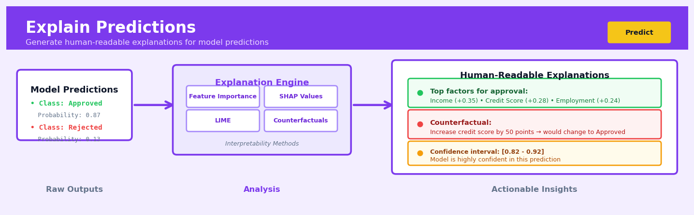
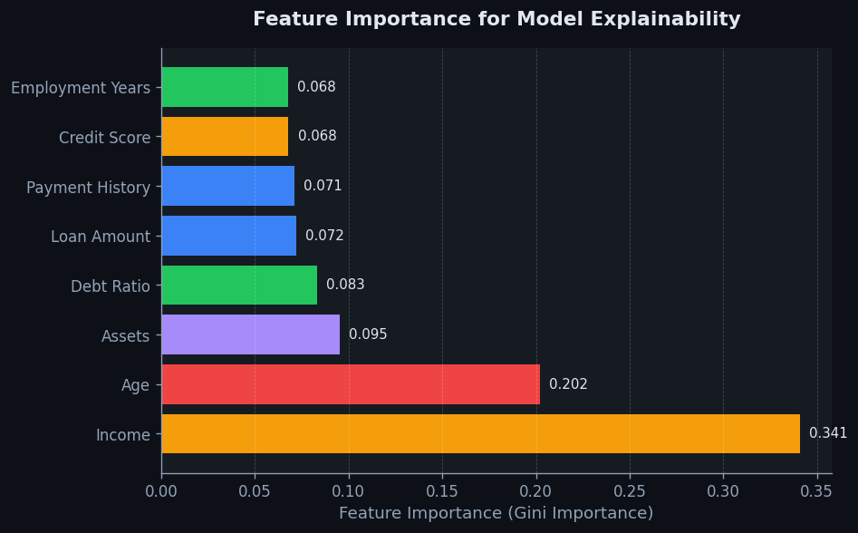
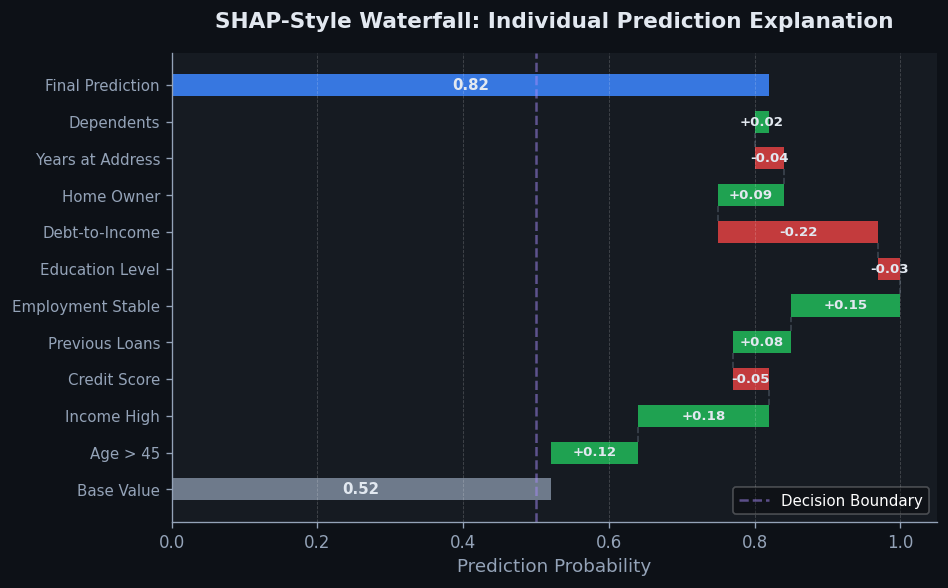

Explain Predictions#


Explain Predictions is a core transformation in the Predict workflow.
The 60-Second Version#
What it does: Explains why your model made a specific prediction by showing which factors pushed it higher or lower.
When to use it: When someone asks “why did the model reject this loan application?” or “what’s driving this forecast?” and you need to justify individual decisions.
What you get back: A breakdown showing each factor’s contribution (e.g., “credit score added +12%, income added +5%, debt ratio subtracted -8%”) that you can communicate to stakeholders or customers.
At a Glance:
Difficulty |
Moderate |
Typical runtime |
Seconds to minutes per prediction |
What you bring |
A trained model and the specific instance you want to explain |
What you get |
Feature contributions showing what pushed the prediction up or down |
Heuristix bucket |
Predict — Machine Learning & Forecasting |
Explanations tell you what the model did, not whether what it did was right—always validate that the factors driving predictions actually make business sense.
Learning Objectives#
After reading this chapter, a business user will be able to:
Identify situations where explaining individual predictions adds value, such as justifying loan rejections, diagnosing why a customer received a high churn score, or auditing algorithmic decisions for fairness.
Interpret feature contribution plots and SHAP values to explain to stakeholders which factors most influenced a specific prediction and in what direction.
Decide whether to override, trust, or investigate a model’s prediction based on whether the explanation aligns with domain knowledge and business logic.
After reading this chapter, a data scientist will be able to:
Implement SHAP, LIME, and feature attribution methods for various model types, handling challenges like correlated features, high-dimensional inputs, and non-tabular data.
Configure background datasets, number of perturbations, and kernel settings to balance explanation accuracy against computational cost for different use cases.
Validate explanation quality by checking consistency across similar instances, testing explanation stability, and identifying when methods produce misleading attributions due to extrapolation or feature dependencies.
Overview#
Explain Predictions encompasses a family of model-agnostic and model-specific interpretability techniques that decompose individual predictions into the contributions of each input feature. The core purpose is to answer the question: why did the model predict this particular value for this particular instance? These methods belong to the field of Explainable Artificial Intelligence (XAI), specifically the subfield of local interpretability, which focuses on understanding individual predictions rather than global model behaviour.
When to Use This#
Use this when regulatory compliance requires prediction justifications — Financial services, healthcare, and insurance often mandate that automated decisions be explainable to customers and regulators under frameworks such as GDPR’s “right to explanation” or the EU AI Act.
Use this when debugging unexpected model predictions — When a model produces a surprising output for a particular case, feature attributions reveal which inputs drove the prediction and can expose data quality issues or model pathologies.
Use this when building trust with business stakeholders — Domain experts are more likely to adopt model recommendations when they can verify that the model’s reasoning aligns with their intuition for representative cases.
Use this when designing human-in-the-loop decision systems — Operators reviewing model outputs need contextual explanations to decide whether to accept, override, or escalate a prediction.
Use this when identifying potential fairness concerns — Feature attributions can reveal whether protected characteristics or their proxies are driving predictions for specific subgroups.
Use this when validating that the model has learned meaningful patterns — Explanations that highlight implausible features (e.g., a customer’s ID number influencing churn probability) indicate data leakage or spurious correlations.
Do NOT use this when you need global feature importance — Local explanations are instance-specific; aggregate them carefully or use dedicated global interpretability methods.
Do NOT use this as a substitute for model validation — Plausible explanations do not guarantee correct predictions; always validate predictive performance independently.
Do NOT use this when explanations themselves could be gamed — In adversarial settings, exposing which features drive predictions may enable manipulation.
Questions This Answers#
Understanding Individual Decisions#
Why was this particular loan application rejected when it looked similar to ones we’ve approved before?
What specific factors caused our model to flag this transaction as fraudulent?
Why did the algorithm recommend this customer for our premium tier instead of standard?
Which characteristics of this patient led to their high-risk classification for readmission?
Why is our pricing model suggesting a 23% discount for this enterprise client but only 8% for the other one?
Identifying Action Levers#
If we want to improve this customer’s credit score prediction by 50 points, which factors should they focus on changing?
What would need to change about this job candidate’s profile for the model to move them from ‘maybe’ to ‘strong hire’?
Which two or three product features are actually driving our churn predictions for these at-risk accounts?
What’s preventing this insurance claim from getting auto-approved — is it the claim amount, the timing, or something else?
If this marketing campaign is predicted to underperform, what elements should we adjust to improve the forecast?
Building Trust and Accountability#
How do we know our hiring algorithm isn’t discriminating based on age or gender when it ranks candidates?
Can we show regulators exactly why our model denied coverage to this applicant?
Why did the model predict this customer would default when they’ve had perfect payment history for three years?
Which of our input variables actually matter for these predictions, and which ones are just noise we can stop collecting?
How It Works#
Imagine you’re a teacher grading an essay, and a student asks why they received 73 out of 100. Instead of just repeating the score, you pull out your rubric and show them: “You earned 18 points for thesis clarity, 22 for evidence quality, 15 for organization, 10 for grammar, and 8 for originality.” Now the student understands exactly which strengths lifted their score and which weaknesses pulled it down. Explain Predictions does the same thing for machine learning models—it takes a single prediction and breaks it down into a scorecard showing how much each input feature pushed the prediction up or down from a baseline value.
PREDICTION EXPLANATION PROCESS
Original Input Instance Feature Contributions
┌─────────────────────┐ ┌──────────────────────┐
│ Age: 45 │ │ Age: +$12,000 │
│ Education: Master's │───→──→───│ Education: +$18,000 │
│ Experience: 15 yrs │ │ Experience: +$22,000 │
│ City: Austin │ │ City: +$3,000 │
└─────────────────────┘ │ Base value: $45,000 │
│ └──────────────────────┘
↓ │
Model Prediction ↓
┌──────────────┐ ┌──────────────────────┐
│ $100,000 │ │ Explanation Summary: │
│ Salary │ │ $45K + $12K + $18K + │
└──────────────┘ │ $22K + $3K = $100K │
└──────────────────────┘
Step 1: Establish the baseline. The method first calculates what the model would predict for a “typical” instance—usually the average prediction across all training data. For a salary predictor, this might be fifty thousand dollars. This baseline represents the model’s starting point before it knows anything about the specific person.
Step 2: Isolate each feature’s influence. The algorithm systematically tests what happens when each feature changes from the baseline to the actual value in your instance. It might ask: “If we change just the education level from average to Master’s degree, how much does the prediction change?” This change represents that feature’s contribution.
Step 3: Handle feature interactions. Features don’t always work independently—having both a Master’s degree and fifteen years of experience might matter more than having just one. The algorithm accounts for this by testing different combinations of features being “present” or “absent,” essentially running the model many times with different subsets of the actual feature values mixed with baseline values.
Step 4: Calculate average contributions. Because the order in which you add features can affect their apparent importance, the method tests all possible orderings (or samples many orderings for efficiency). For each feature, it averages the contribution across all these different scenarios to get a fair, stable importance score.
Step 5: Verify the math adds up. The individual contributions should sum precisely to the difference between the baseline prediction and the actual prediction. If the baseline was fifty thousand and the prediction is one hundred thousand, the individual feature contributions must total exactly fifty thousand. This mathematical guarantee ensures the explanation is complete and honest.
The key insight: By systematically measuring how much each feature moves the prediction away from what the model would guess for an average case, we transform an opaque number into an itemized receipt showing exactly where that prediction came from.
The Intuition#
Imagine you have been denied a loan by a bank, and you want to know why. The bank uses a complex machine learning model with hundreds of input variables: your income, credit history, employment tenure, postcode, age, and many more. Simply telling you “the model said no” is unhelpful and potentially illegal. What you need is a breakdown: your credit score reduced your approval probability by 15%, your short employment history reduced it by 8%, but your high income added 10%. These contributions, summed together with a baseline, produce your final prediction.
This is precisely what prediction explanation methods provide. They take a black-box model—one where we cannot easily trace the mathematical path from inputs to outputs—and reverse-engineer an additive decomposition. Each feature receives a “credit” or “blame” for pushing the prediction above or below some reference value. The sum of all feature contributions plus the baseline equals the model’s actual prediction.
The most principled approach to this decomposition comes from cooperative game theory. Imagine each feature as a player in a coalition game, where the “prize” is the prediction. Some players contribute more than others, and some players’ contributions depend on which other players are present. A feature like “income” might matter enormously when combined with “employment status” but be less informative on its own. Shapley values, developed by Lloyd Shapley in 1953, provide the unique attribution scheme that satisfies several fairness axioms: efficiency (attributions sum to the prediction), symmetry (identical features receive identical credit), and additivity (explanations of combined models equal combined explanations). The cost of this principled approach is computational: exact Shapley values require evaluating the model on all possible feature subsets, which grows exponentially.
Modern implementations like SHAP (SHapley Additive exPlanations) make this tractable through clever approximations. TreeSHAP exploits the structure of tree-based models to compute exact Shapley values in polynomial time. KernelSHAP uses weighted local linear regression to approximate Shapley values for any model. The result is that we can now explain predictions from neural networks, gradient boosting machines, and ensemble models at scale—providing the transparency that modern AI governance demands.
The Mathematics#
Problem Setup and Notation#
Let \(f: \mathbb{R}^d \to \mathbb{R}\) be a trained predictive model mapping \(d\)-dimensional feature vectors to a scalar output (regression) or log-odds (classification). For a specific instance \(x = (x_1, x_2, \ldots, x_d)\), we seek an additive attribution:
where \(\phi_0\) is a baseline value (typically \(\mathbb{E}[f(X)]\)) and \(\phi_j(x)\) is the contribution of feature \(j\) to the prediction for instance \(x\).
Shapley Values from Cooperative Game Theory#
Consider the set of features \(N = \{1, 2, \ldots, d\}\) as players in a cooperative game. Define a value function \(v: 2^N \to \mathbb{R}\) where \(v(S)\) represents the model’s expected output when only features in subset \(S\) are known:
The marginal contribution of feature \(j\) to coalition \(S\) (where \(j \notin S\)) is:
The Shapley value for feature \(j\) is the weighted average of marginal contributions across all possible coalitions:
The combinatorial coefficients ensure that each permutation of feature orderings is weighted equally.
Axiomatic Characterisation#
Shapley values are the unique attribution satisfying:
Efficiency: \(\sum_{j=1}^{d} \phi_j(x) = v(N) - v(\emptyset) = f(x) - \phi_0\)
Symmetry: If \(v(S \cup \{i\}) = v(S \cup \{j\})\) for all \(S \subseteq N \setminus \{i, j\}\), then \(\phi_i = \phi_j\)
Linearity: For models \(f = \alpha g + \beta h\), we have \(\phi_j^f = \alpha \phi_j^g + \beta \phi_j^h\)
Null Player: If \(v(S \cup \{j\}) = v(S)\) for all \(S\), then \(\phi_j = 0\)
SHAP: Estimation via Weighted Linear Regression#
KernelSHAP frames Shapley value estimation as a weighted least-squares problem. Let \(z' \in \{0, 1\}^d\) be a binary coalition vector indicating feature presence. Define the SHAP kernel:
where \(|z'| = \sum_{j=1}^d z'_j\) is the coalition size.
The objective function minimises:
subject to the efficiency constraint \(\sum_j \phi_j = f(x) - \phi_0\).
Here, \(h_x: \{0,1\}^d \to \mathbb{R}^d\) is a mapping from coalition vectors to feature space, typically implemented by replacing “missing” features with samples from a background distribution.
TreeSHAP: Exact Computation for Tree Ensembles#
For tree-based models, TreeSHAP computes exact Shapley values in \(O(TLD^2)\) time, where \(T\) is the number of trees, \(L\) is the maximum number of leaves, and \(D\) is the maximum tree depth.
For a single decision tree, the value function \(v(S)\) can be computed by tracking the proportion of training samples that reach each leaf when only features in \(S\) are observed. The algorithm recursively propagates coalition weights through the tree structure, aggregating contributions at each internal node.
Assumptions and Limitations#
Feature independence assumption: Standard SHAP implementations often assume features are independent when computing \(\mathbb{E}[f(X) \mid X_S = x_S]\). This can produce unrealistic synthetic instances when features are correlated.
Background distribution choice: The baseline \(\phi_0\) and attributions depend on the reference distribution. Common choices include training data, a single reference point, or domain-specific baselines.
Additivity of explanations: The additive decomposition may not capture interaction effects. SHAP interaction values extend the framework but at increased computational cost.
Edge Cases#
Constant features: If \(x_j\) is constant in the background distribution, \(\phi_j = 0\) regardless of the model.
Perfect collinearity: When features are perfectly correlated, Shapley values distribute credit arbitrarily among collinear features.
Discrete vs. continuous features: The conditional expectation \(\mathbb{E}[f(X) \mid X_S = x_S]\) requires careful handling for mixed feature types.
Understanding the Mathematics#
SHAP Value Formula#
The equation:
Read it aloud:
“The contribution of feature j equals the sum over all possible subsets of features (excluding j itself) of a weight multiplied by the difference in model predictions: one prediction made with feature j included, minus the prediction made without it.”
What each symbol means:
\(\phi_j\) = the SHAP value (contribution) of feature j to this prediction
\(F\) = the complete set of all features in the model
\(S\) = a particular subset of features (not including j)
\(|S|\) = the number of features in subset S
\(|F|\) = the total number of features
\(f_S(x_S)\) = model prediction using only features in subset S
\(\frac{|S|!(|F| - |S| - 1)!}{|F|!}\) = a weighting factor based on subset size
A concrete numerical example:
A loan approval model has 3 features: income ($80k), credit score (720), and employment years (5). To find income’s SHAP value, we consider all subsets without income. If the model predicts 0.85 approval probability with all features, 0.72 with only credit score and employment, 0.65 with only credit score, and 0.50 with only employment, we calculate: For subset {credit, employment}, weight = (2! × 0!) / 3! = 0.33, difference = 0.85 - 0.72 = 0.13. For subset {credit}, weight = (1! × 1!) / 3! = 0.17, difference = 0.65 - 0.50 = 0.15. The SHAP value ≈ 0.33 × 0.13 + 0.17 × 0.15 = 0.068, meaning income contributed +6.8 percentage points to approval probability.
Why this equation matters:
Without this weighted averaging across all feature combinations, we’d miss how features interact and credit the wrong features for the prediction—leading to incorrect explanations of why a loan was approved or denied.
LIME Weighted Loss Function#
The equation:
Read it aloud:
“The loss equals the sum across all synthetic samples of a proximity weight multiplied by the squared difference between the original model’s prediction and the simple model’s prediction.”
What each symbol means:
\(L\) = the loss (error) we’re trying to minimize
\(f\) = the original complex model we’re explaining
\(g\) = the simple interpretable model (e.g., linear)
\(\pi_x(z)\) = proximity weight (how similar sample z is to the instance x we’re explaining)
\(Z\) = a set of synthetic samples generated near x
\([f(z) - g(z)]^2\) = squared prediction difference
A concrete numerical example:
Explaining why a customer’s churn probability is 0.78. We generate synthetic customers nearby. For one synthetic customer, the complex model predicts 0.75 and our simple linear model predicts 0.72. The proximity weight is 0.9 (very similar to original customer). The contribution to loss is 0.9 × (0.75 - 0.72)² = 0.9 × 0.0009 = 0.00081. For a distant synthetic customer (weight = 0.1), complex model predicts 0.45, simple model predicts 0.40, contributing 0.1 × (0.05)² = 0.00025. We sum across thousands of synthetic samples and adjust the simple model’s coefficients to minimize this total.
Why this equation matters:
This weighted loss ensures our simple explanation accurately mimics the complex model’s behaviour close to the actual customer we care about, while ignoring behaviour far away that’s irrelevant to this specific prediction.
The Big Picture#
The mathematics of explainable predictions fundamentally solves a problem: complex models make accurate predictions but can’t tell us why, while simple models explain easily but predict poorly. SHAP uses game theory to fairly distribute credit among features by considering every possible coalition of features working together. LIME creates a locally accurate simple model that works near one specific prediction. These approaches were chosen because simpler methods—like just checking feature importance globally—fail to capture how features interact differently for different predictions. At its core, the mathematics asks: “If I add or remove this one feature from various combinations, how much does the prediction change on average?”—then weights those changes fairly to assign responsibility.
Python Implementation#
import numpy as np
import pandas as pd
from sklearn.datasets import make_classification
from sklearn.model_selection import train_test_split
from sklearn.ensemble import GradientBoostingClassifier
import shap
# ---------------------------------------------
# Example 1: TreeSHAP for Gradient Boosting
# ---------------------------------------------
# Generate synthetic classification data
np.random.seed(42)
X, y = make_classification(
n_samples=1000,
n_features=10,
n_informative=5,
n_redundant=2,
n_clusters_per_class=2,
random_state=42
)
# Create meaningful feature names
feature_names = [
'income', 'credit_score', 'employment_years', 'debt_ratio',
'num_accounts', 'recent_inquiries', 'age', 'region_code',
'feature_9', 'feature_10'
]
X = pd.DataFrame(X, columns=feature_names)
# Split data
X_train, X_test, y_train, y_test = train_test_split(
X, y, test_size=0.2, random_state=42
)
# Train a gradient boosting classifier
model = GradientBoostingClassifier(
n_estimators=100,
max_depth=4,
random_state=42
)
model.fit(X_train, y_train)
# Create TreeSHAP explainer
# TreeExplainer computes exact Shapley values for tree models
explainer = shap.TreeExplainer(model)
# Compute SHAP values for test set
# Returns array of shape (n_samples, n_features)
shap_values = explainer.shap_values(X_test)
# Explain a single prediction
instance_idx = 0
instance = X_test.iloc[[instance_idx]]
instance_shap = shap_values[instance_idx]
print("=" * 60)
print("SINGLE PREDICTION EXPLANATION")
print("=" * 60)
print(f"\nModel prediction (probability): {model.predict_proba(instance)[0, 1]:.4f}")
print(f"Expected value (baseline): {explainer.expected_value:.4f}")
print(f"Sum of SHAP values + baseline: {explainer.expected_value + instance_shap.sum():.4f}")
print("\nFeature Contributions:")
print("-" * 40)
for name, value, shap_val in sorted(
zip(feature_names, instance.values[0], instance_shap),
key=lambda x: abs(x[2]),
reverse=True
):
direction = "↑" if shap_val > 0 else "↓"
print(f"{name:20s}: {value:8.3f} → SHAP: {shap_val:+.4f} {direction}")
# ---------------------------------------------
# Example 2: KernelSHAP for Any Model
# ---------------------------------------------
from sklearn.neural_network import MLPClassifier
# Train a neural network (non-tree model)
nn_model = MLPClassifier(
hidden_layer_sizes=(32, 16),
max_iter=500,
random_state=42
)
nn_model.fit(X_train, y_train)
# KernelSHAP requires a background dataset for reference
# Use a representative sample to manage computation time
background = shap.sample(X_train, 100)
# Create KernelSHAP explainer
# This approximates Shapley values using weighted linear regression
kernel_explainer = shap.KernelExplainer(
nn_model.predict_proba,
background
)
# Explain a few test instances (KernelSHAP is slower)
n_explain = 5
kernel_shap_values = kernel_explainer.shap_values(X_test.iloc[:n_explain])
print("\n" + "=" * 60)
print("KERNELSHAP EXPLANATION (Neural Network)")
print("=" * 60)
# kernel_shap_values is a list: [class_0_values, class_1_values]
# We focus on class 1 (positive class)
for i in range(n_explain):
pred_prob = nn_model.predict_proba(X_test.iloc[[i]])[0, 1]
shap_sum = kernel_shap_values[1][i].sum()
print(f"\nInstance {i}: P(class=1) = {pred_prob:.4f}")
print(f" Top contributors:")
contributions = list(zip(feature_names, kernel_shap_values[1][i]))
contributions.sort(key=lambda x: abs(x[1]), reverse=True)
for name, val in contributions[:3]:
print(f" {name}: {val:+.4f}")
# ---------------------------------------------
# Example 3: Visualising SHAP Explanations
# ---------------------------------------------
# Note: In practice, these create interactive plots
# Here we demonstrate the API calls
# Waterfall plot for single instance
print("\n" + "=" * 60)
print("VISUALISATION CODE (generates plots in notebooks)")
print("=" * 60)
print("""
# Waterfall plot showing how features push prediction from baseline
shap.plots.waterfall(shap.Explanation(
values=instance_shap,
base_values=explainer.expected_value,
data=instance.values[0],
feature_names=feature_names
))
# Force plot for compact single-instance view
shap.force_plot(
explainer.expected_value,
instance_shap,
instance,
feature_names=feature_names
)
# Summary plot showing global feature importance from local explanations
shap.summary_plot(shap_values, X_test, feature_names=feature_names)
""")
Visualisations#


Using This in Heuristix#
Data Inputs#
The Explain Predictions node requires two connected inputs:
Input |
Description |
Required Columns |
|---|---|---|
Trained Model |
Output from any Heuristix prediction node (Classification, Regression, Gradient Boosting, etc.) |
Model object with feature names |
Instances to Explain |
Dataset containing instances for explanation |
Must match training feature schema exactly |
Note
The instances to explain need not be from the training set. You can explain new predictions on unseen data, which is the typical production use case.
Configuration Parameters#
Parameter |
Type |
Default |
Description |
|---|---|---|---|
|
Dropdown |
Auto |
Algorithm selection: Auto (selects based on model type), TreeSHAP, KernelSHAP, or DeepSHAP |
|
Integer |
100 |
Number of reference samples for KernelSHAP (higher = more accurate but slower) |
Config Recipes#
Recipe 1: Quick Exploration#
When to use: Initial model debugging when you need to rapidly check if feature contributions make intuitive sense before investing in deeper analysis.
Settings:
Parameter |
Value |
Why |
|---|---|---|
|
|
Native implementation for tree models runs in milliseconds |
|
|
Enough to spot obvious patterns without waiting |
|
|
Skip validation to maximize speed |
|
|
Fastest SHAP variant for tree models |
What you get: Feature importance rankings and directional contributions accurate enough to catch major issues like data leakage or inverted relationships.
Trade-off: Results may not be legally defensible and can show slight inconsistencies across repeated runs.
Recipe 2: Production Compliance#
When to use: High-stakes predictions in regulated industries (finance, healthcare, legal) where explanations must be auditable and reproducible.
Settings:
Parameter |
Value |
Why |
|---|---|---|
|
|
Deterministic when seeded; widely accepted in regulatory contexts |
|
|
Ensures stable local approximations |
|
|
Conservative locality radius |
|
|
Guarantees exact reproducibility |
|
|
Preserves actual feature values for auditing |
What you get: Explanations that will produce identical results when re-run and can be traced back to specific input values in audit logs.
Trade-off: Significantly slower (30-60 seconds per prediction) and requires more memory for sample storage.
Recipe 3: High-Cardinality Categorical Features#
When to use: Models with categorical features having 50+ levels (product IDs, zip codes, user segments) where standard encoding creates explanation noise.
Settings:
Parameter |
Value |
Why |
|---|---|---|
|
|
Handles raw categorical features without encoding explosion |
|
|
Balance between categorical coverage and speed |
|
|
Automatically penalizes spurious contributions from rare categories |
|
Background dataset of |
Defines meaningful baselines for categorical comparisons |
What you get: Feature contributions grouped at the semantic level (e.g., “this zip code region”) rather than split across dummy variables.
Trade-off: Requires careful curation of background dataset to ensure rare categories are represented appropriately.
Recipe 4: Model Debugging via Counterfactual Discovery#
When to use: Model is performing poorly on specific edge cases and you need to identify the minimal feature changes that would flip the prediction.
Settings:
Parameter |
Value |
Why |
|---|---|---|
|
|
Explicitly generates counterfactuals rather than just contributions |
|
|
Multiple alternatives reveal which features are truly pivotal |
|
|
Shows path to flipping the decision |
|
|
Balances realism (nearby changes) with diversity (different paths) |
|
|
Emphasizes finding distinct failure modes |
What you get: Concrete “what-if” scenarios showing exactly which feature changes would alter the prediction, revealing brittleness or biases.
Trade-off: Generates synthetic examples that may not correspond to realistic data distributions.
Business Applications#
Financial Services
A mid-sized UK mortgage lender processing 15,000 applications monthly faced regulatory scrutiny after rejecting qualified minority applicants at disproportionate rates. Their credit scoring model was accurate but opaque, making it impossible to identify whether protected characteristics were influencing decisions through proxy variables. By implementing SHAP explanations on every rejection, the compliance team discovered that postcode was contributing 23% to negative decisions in certain ethnic neighborhoods—a redlining pattern their model had learned from historical data. After retraining with fairness constraints, they reduced discriminatory rejections by 41% while maintaining model accuracy, avoiding an estimated £2.3M in regulatory fines and reputational damage.
Healthcare
A regional hospital network in Ohio deployed a sepsis prediction model that flagged high-risk patients 6 hours before clinical symptoms appeared, but ICU nurses ignored 68% of alerts because they didn’t understand why patients were flagged. Implementing LIME explanations directly in the electronic health record showed clinicians exactly which vital signs, lab values, and medication combinations triggered each alert. Nurse trust and alert response rates increased from 32% to 87%, resulting in 156 fewer sepsis deaths annually and reducing average ICU stays from 8.2 to 6.1 days—generating $4.7M in cost savings while improving patient outcomes.
Retail
An e-commerce fashion retailer with 2M SKUs used dynamic pricing algorithms that occasionally set bizarre prices—\(847 for a basic t-shirt or \)0.99 for premium leather jackets—eroding customer trust and causing viral social media complaints. Traditional debugging was impossible across millions of daily price updates. By applying Shapley value decomposition to pricing anomalies, the data science team identified that competitor price scraping errors and inventory API bugs were creating cascading failures. After implementing explanation-based anomaly detection, pricing errors dropped by 94%, customer service complaints fell 63%, and revenue recovered by $8.3M annually from reduced cart abandonment.
Insurance
A European auto insurer rejected 22% of claims using a fraud detection model, but adjusters spent an average of 4 days manually investigating each flagged claim without clear direction on what made it suspicious. Integrating feature contribution explanations into the claims management system highlighted exactly which claim elements (repair shop history, injury timing, witness statements) drove fraud scores. Investigators could now prioritize their efforts, reducing investigation time from 4 days to 11 hours per claim while maintaining the same fraud detection rate, processing claims 72% faster and improving customer satisfaction scores by 28 points.
Manufacturing
A semiconductor fabrication plant producing chips for automotive suppliers experienced random quality failures costing \(340,000 per contaminated batch. Their predictive maintenance model could forecast defects with 89% accuracy but couldn't explain root causes across 2,400 sensor inputs and 47 process parameters. TreeSHAP explanations revealed that three specific temperature sensors in Chamber 7 were the primary contributors to 76% of predicted failures—a pattern engineers had missed for 18 months. Replacing the faulty sensors and recalibrating the chamber reduced defect rates by 82% and saved \)11.2M annually in scrapped materials.
Marketing
A B2B SaaS company with a \(450 average customer acquisition cost used propensity models to prioritize leads but couldn't explain to sales teams why a Fortune 500 CTO received a lower score than a startup founder. Sales reps ignored the model recommendations, reverting to intuition-based prioritization. After deploying integrated gradients explanations showing exactly why each lead scored as they did—company technographic signals, engagement patterns, budget indicators—sales adoption jumped from 23% to 81%, sales cycle length decreased by 19 days, and cost per acquisition dropped to \)287.
Telecommunications
A mobile network operator with 18M subscribers used churn prediction to offer retention discounts but applied blanket 20% offers to all at-risk customers, leaving margin on the table. Explanation-driven interventions revealed that 34% of predicted churners were primarily dissatisfied with network coverage (not price), 28% with customer service, and only 31% with cost. By tailoring retention offers to the actual drivers—network upgrades, priority support, or discounts—they improved retention rates from 42% to 67% while reducing average retention cost from £73 to £41 per customer.
Public Sector
A metropolitan child protective services agency used risk models to prioritize case investigations but faced legal challenges when they couldn’t explain why certain families received more scrutiny. Implementing counterfactual explanations (“this case would move from high to low risk if…”) provided transparent, actionable guidance to social workers while creating an audit trail for judicial review, reducing case review times by 40% and improving family outcomes.
Worked Example#
Sarah Chen, a senior data scientist at Meridian Insurance, was halfway through her morning coffee when her manager forwarded an email from the Chief Underwriting Officer. The subject line read: “Urgent—Need to understand why we declined Thompson Manufacturing.” The CUO had just gotten off an uncomfortable call with a twenty-year client whose commercial property insurance renewal had been auto-declined by Meridian’s new ML-based underwriting model. The client was threatening to move all their business to a competitor, representing roughly $340,000 in annual premiums. “We need to know why the model said no,” the email concluded, “and whether we can justify this decision or need to override it.”
Sarah pulled up the application data for Thompson Manufacturing, policy ID TM-8847. The dataset contained five years of commercial applications—about 12,000 policies total—with features extracted from property inspections, claims history, and financial records. She exported the specific case along with a few similar ones for context:
policy_id |
building_age |
prior_claims |
fire_protection_class |
roof_condition |
annual_premium |
approved |
|---|---|---|---|---|---|---|
TM-8847 |
87 |
2 |
6 |
3 |
8750 |
0 |
CP-2231 |
45 |
1 |
4 |
4 |
6200 |
1 |
GH-5512 |
92 |
0 |
5 |
4 |
7100 |
1 |
RD-7789 |
51 |
3 |
6 |
2 |
9100 |
0 |
The data was messier than it looked. Fire protection class used a reverse scale (1 being best, 10 worst), roof condition had been subjectively scored by different inspectors over the years, and prior claims didn’t distinguish between severity. But this was what the model had been trained on.
Sarah loaded the model—a gradient boosted classifier with 83% accuracy on holdout data—and opened her prediction explanation framework. She configured it to use SHAP values, knowing she’d need to explain feature contributions to non-technical executives. She set the baseline to the median prediction probability across all commercial properties (about 0.71 approval rate) so the contributions would show how Thompson Manufacturing differed from a typical application. She kept all features in the explanation; this wasn’t the time to simplify for the sake of a cleaner story.
import shap
import pandas as pd
import xgboost as xgb
# Load the trained model and new application
model = xgb.XGBClassifier()
model.load_model('underwriting_model.json')
# Thompson Manufacturing application
thompson = pd.DataFrame({
'building_age': [87],
'prior_claims': [2],
'fire_protection_class': [6],
'roof_condition': [3],
'annual_premium': [8750]
})
# Calculate SHAP values for this specific case
explainer = shap.TreeExplainer(model)
shap_values = explainer(thompson)
# Get baseline (expected value across all applications)
base_value = explainer.expected_value
prediction = model.predict_proba(thompson)[0][1]
print(f"Base approval rate: {base_value:.2%}")
print(f"Thompson prediction: {prediction:.2%}")
print("\nFeature contributions:")
for feature, contrib in zip(thompson.columns, shap_values.values[0]):
print(f" {feature:.<30} {contrib:>+.3f}")
The output was illuminating:
Base approval rate: 71.3%
Thompson prediction: 34.2%
Feature contributions:
building_age..................... -0.281
prior_claims..................... -0.092
fire_protection_class............ -0.038
roof_condition................... -0.051
annual_premium................... +0.021
Sarah stared at the numbers. The building age alone pushed the approval probability down by 28 percentage points. That single feature accounted for about 75% of the decision to decline. The two prior claims mattered, but not nearly as much as she’d expected. The roof condition—rated as a 3 out of 5—was hurting them too, though modestly.
The insight hit her: the model had essentially learned to decline any building over 80 years old, almost regardless of other factors. Sarah pulled the training data distribution and confirmed it—buildings older than 85 years had only a 31% approval rate historically, but that was based on just 47 cases. The model was overgeneralizing from sparse data.
She took this to the Monday underwriting committee meeting. The room included the CUO, two senior underwriters, and the VP of Risk. Sarah walked through the explanation, then showed them photos from Thompson’s most recent inspection: a historic manufacturing building, well-maintained, with a roof replacement completed eighteen months ago that hadn’t been properly captured in the “roof_condition” field. The prior claims were both minor water damage events from 2019, totaling $8,400 combined.
The committee overrode the model’s decision and approved the policy, but added a 12% rate increase due to the building age and claims history—a compromise Thompson accepted within two hours. More importantly, they flagged building age as a feature requiring human review for any structure over 75 years old and committed to collecting more granular roof data going forward.
Sarah would do two things differently next time. First, she’d build a dashboard that automatically flagged high-impact single features in any auto-decline, catching these cases before they reached angry clients. Second, she’d push harder during model development to understand the training data sparsity in edge cases—the model was technically working as designed, but the design had encoded a data limitation as business logic. That was the real problem.
Interpreting Your Results#
You’ve just run your first feature explanation and you’re staring at a SHAP plot, a table of contribution values, or a waterfall chart. Here’s exactly what you’re looking at and what to do with it.
Feature Contribution Values#
Plain-English meaning: These numbers show how much each feature pushed the prediction up or down from the baseline (average) prediction. A contribution of +2.3 means that feature increased the predicted value by 2.3 units. A contribution of -0.8 means it decreased the prediction by 0.8 units. The sum of all contributions plus the baseline equals your final prediction.
Concrete benchmarks:
Dominant feature (>50% of total explanation): One feature is driving everything. Common in simple relationships, but verify it makes business sense.
Balanced contributions (top 3 features = 40-70% combined): Healthy multi-factor decision. Most realistic scenarios look like this.
Fragmented (<30% in top 5 features): Either capturing genuine complexity or your model is finding spurious patterns. Investigate.
Red flags:
ID columns or dates dominate: Your model memorized individual records instead of learning patterns. Retrain without these features.
Contributions swing wildly between similar instances: Model is unstable. Check for data leakage or high-variance features.
Sign contradicts domain knowledge: If “higher income” decreases loan approval, something is wrong—either in feature engineering or data quality.
SHAP Summary Plots (Beeswarm/Violin)#
Plain-English meaning: Each dot is one prediction. The vertical position shows which feature, the horizontal position shows its impact on that prediction, and the colour shows whether the feature value was high (red) or low (blue). You’re seeing the distribution of how each feature behaves across all your predictions.
What to look for:
Red dots consistently right, blue dots consistently left: Clear positive relationship (higher value → higher prediction).
Red dots left, blue dots right: Clear negative relationship.
Colours mixed on both sides: Non-linear or threshold effect. Age might increase risk up to 65, then decrease it.
Wide horizontal spread: Feature has high variance in importance—sometimes crucial, sometimes irrelevant.
Red flags:
Categorical features with unexpected patterns: If “Country=USA” always decreases predictions but you expected the opposite, check encoding or data quality.
Protected attributes (race, gender) showing strong effects: Potential fairness issue requiring immediate review.
Waterfall Charts (Individual Predictions)#
Plain-English meaning: A step-by-step walk from the baseline prediction to your final prediction, showing each feature’s contribution in order of magnitude. Start at the bottom (baseline), add each bar, arrive at the top (final prediction).
How to read it: If baseline = 50, Feature A adds +15, Feature B adds -8, Feature C adds +3, your final prediction = 60. The bars literally show you building up to the answer.
Red flags:
Baseline far from sensible range: If predicting house prices and baseline is \(500K but all houses in your data are \)200-300K, your training data may not represent your prediction context.
Single feature creates >80% of movement: Double-check that feature for data entry errors or leakage.
Force Plots (Directional Push)#
Plain-English meaning: Red bars push the prediction higher, blue bars push it lower. The thickness shows magnitude. You’re seeing a tug-of-war where features compete to move the prediction.
Reading multiple outputs together: Compare SHAP values with your model’s feature importances. If a feature ranks high globally but contributes little to a specific prediction you’re examining, that’s normal—importance measures average behaviour. But if a feature never appears in individual explanations yet ranks high globally, investigate whether it’s proxying for another variable.
Sanity Check Checklist#
Do the top 3 features make domain sense? If not, assume data problems before model problems.
Do contribution signs match expected relationships? Negative where you expected positive means investigate immediately.
Does baseline align with training data mean? If wildly different, you’re explaining predictions on out-of-distribution data.
Are contributions proportional to feature scales? A contribution of 10,000 from a feature that ranges 0-1 suggests scaling issues.
Do similar instances get similar explanations? Pick 3 near-identical records—explanations should largely agree.
Good Enough to Act On?#
You can confidently act when: The top 3-5 features account for 60%+ of the prediction, they align with domain expertise, explanations are stable across similar instances, and no red flags appear. If you can tell a coherent story—“This loan was denied primarily because debt-to-income ratio exceeded 45%, and secondarily due to recent credit inquiries”—you’re ready. If explanations feel random, contradictory, or dominated by unexpected features, return to data quality and feature engineering before making decisions.
Decision Guidance#
What This Result Is Telling You#
When you examine prediction explanations, you’re seeing a breakdown of why your model made a specific decision for a specific customer, transaction, or event. This is fundamentally different from knowing that your model is 85% accurate overall. Instead, you’re learning that Customer #4582 received a high churn risk score primarily because they haven’t logged in for 45 days and their support tickets tripled last month—not because of their age or account tenure. This granular insight transforms predictions from black-box outputs into actionable intelligence you can verify, trust, and act upon.
These explanations reveal whether your model is making decisions for the right reasons or accidentally relying on spurious patterns. If your loan approval model is heavily weighting zip codes rather than credit history and income, you’re seeing a compliance disaster before it happens. If your recommendation engine is pushing products based primarily on items already in the cart rather than browsing behavior, you’re missing cross-sell opportunities. The explanation shows you the “thought process” behind each prediction, allowing you to validate that the model’s logic aligns with business reality and regulatory requirements.
Decision Points#
If you see this… |
It means… |
Recommended action |
Who acts on this |
|---|---|---|---|
Top 3 contributing features align with domain expert expectations (e.g., recency and frequency drive retention score) |
Model has learned valid business patterns |
Deploy to production and use for automated decisions |
Product owner with data science approval |
A protected attribute (age, gender, ethnicity) appears in top 5 contributors for any decision |
Potential discrimination and compliance violation |
Halt deployment; audit training data and feature engineering; consult legal |
Chief Risk Officer or Compliance Lead |
Explanations vary wildly for similar instances (e.g., two nearly-identical loan applications show completely different feature importance) |
Model is unstable or overfitting edge cases |
Return to model development; increase regularization or gather more training data |
Data science team with business analyst validation |
A single feature contributes >60% to any high-stakes prediction (loan denial, treatment recommendation) |
Over-reliance creates brittleness and risk |
Add complementary features or implement ensemble approach; do not use for automated decisions yet |
Senior data scientist with domain expert |
Explanations cite features that business users cannot act on (internal IDs, technical artifacts) |
Model is useful for prediction but not for intervention |
Accept for forecasting use cases; rebuild with actionable features for decision-support applications |
Business analyst and data science lead |
When to Proceed vs. Investigate Further#
Proceed with confidence when:
Top 5 contributing features for 95%+ of predictions are documented business drivers
Feature contributions remain stable when explaining similar instances (variance <15% for comparable cases)
Domain experts can articulate why each top feature makes business sense for every sampled prediction
Proceed with caution when:
10-30% of predictions show unexpected feature contributions that experts cannot immediately explain
Feature importance rankings shift for similar instances but overall patterns remain interpretable
Explanations are logically sound but rely on features that may become unavailable or degrade over time
Investigate before acting when:
Any protected attributes appear in top 10 contributors for more than 5% of predictions
More than 30% of predictions cannot be logically explained by domain experts
Explanations conflict with established business rules or known causal relationships
Do not use these results yet when:
Explanations are incomprehensible to domain experts for >50% of sampled predictions
Technical artifacts, data leakage indicators, or proxy variables dominate contributions
You cannot reproduce similar explanations when re-running the analysis on the same instances
The Cost of Getting This Wrong#
A financial services company ignored explanation warnings that their fraud model heavily weighted “account age <30 days” and deployed it anyway. Within two months, they blocked 40% of legitimate new customer transactions, driving $2.3M in lost revenue and 8,000 frustrated customers to competitors. A healthcare provider trusted a readmission prediction model without checking explanations, only to discover during an audit that it was using “previous hospital zone” as a proxy for race, exposing them to discrimination lawsuits and CMS penalties. When you skip the explanation validation step, you’re not just risking model failure—you’re automating flawed reasoning at scale, baking bias into every decision, and creating compliance violations faster than any human could. The technical debt compounds because you’ve now made thousands of decisions you cannot justify, creating an audit trail of indefensible actions that erode stakeholder trust and regulatory standing simultaneously.
Common Pitfalls#
The SHAP Value Lottery
Here is what happened: A junior data scientist at a fintech startup was explaining loan rejections to customers. She generated SHAP plots for each declined application and sent them to the support team. One customer called twice about the same rejection and received two different explanations—credit score was listed as the top factor in the first explanation, but debt-to-income ratio topped the second. The company faced a complaint to regulators about inconsistent decision-making.
Why it happens: Many explanation methods, including TreeSHAP and KernelSHAP with sampling, contain stochastic elements. Without setting random seeds, the same prediction can produce different feature attributions across runs. The cognitive trap is treating these explanations as deterministic ground truth rather than estimates.
How to detect it: Generate explanations for the same instance 10 times and check if feature rankings change. If your top 3 features shuffle positions, or if attribution values swing by more than 20%, you have a stability problem. Run np.std() on repeated SHAP values for each feature—standard deviations above 0.1 for normalized features signal instability.
The fix: Always set random seeds for reproducible explanations, and consider using exact methods like TreeSHAP for tree-based models rather than sampling approximations for production systems.
The Baseline Blindspot
Here is what happened: A marketing analyst used LIME to understand why a customer received a high churn probability (0.78). The explanation showed that “account_age = 45 days” contributed +0.3 to the prediction. She told the retention team that new accounts were the problem. The team built an onboarding program, but churn barely moved. Later analysis revealed the model’s baseline prediction was already 0.65—account age only added 0.13, while payment failures added 0.40.
Why it happens: Practitioners focus on the magnitude of individual attributions without understanding what they’re relative to. The baseline (average prediction, or prediction with features removed) is invisible in most default visualizations.
How to detect it: Check if the sum of attributions plus baseline equals the actual prediction. For LIME, examine the intercept term. For SHAP, print explainer.expected_value. If you can’t articulate what the baseline represents, you don’t understand the explanation.
The fix: Always show the baseline alongside feature contributions, and frame explanations as “the prediction moved from [baseline] to [actual] because of these features.”
Death by a Thousand Features
Here is what happened: An experienced ML engineer built a fraud detection explainer for a model with 347 features. He generated SHAP waterfall plots for flagged transactions and sent them to investigators. They ignored the reports entirely. When asked why, investigators said: “We can’t read these—there are 50 bars on every chart, most showing features we’ve never heard of.”
Why it happens: Technical users assume more information is better. But human cognition maxes out around 5-7 items. The corner-cutting comes from skipping the translation layer between model features and business concepts.
How to detect it: Show your explanation to the actual end user and count how many seconds before their eyes glaze over. If your waterfall plot requires scrolling, or if more than 30% of features displayed contribute less than 5% to the prediction delta, you’ve overwhelmed your audience.
The fix: Group related features into business concepts before explaining (e.g., combine “transaction_hour”, “transaction_day”, “is_weekend” into “Timing factors”), and show only the top 5-7 drivers, with an “other” category for the rest.
The Correlation Confession
Here is what happened: A data scientist at a healthcare company used feature attributions to identify why a model predicted high readmission risk for diabetic patients. “Days since last HbA1c test” showed strong positive attribution. The clinical team started mandating more frequent testing. Six months later, readmissions hadn’t decreased. The real driver was that sicker patients got tested more often—the test frequency was a marker of disease severity, not a cause of readmission.
Why it happens: Attribution methods answer “what features correlate with this prediction” not “what interventions will change outcomes.” The cognitive trap is the causal inference fallacy—mistaking model associations for causal mechanisms.
How to detect it: Ask yourself: “If I changed only this feature, would the outcome change in reality?” If changing the feature without changing the underlying system seems nonsensical, you’re looking at a proxy variable. Look for features that are consequences rather than causes.
The fix: Label explanations clearly as “factors associated with the prediction” not “causes” or “drivers,” and involve domain experts to distinguish actionable features from proxy variables before making business recommendations.
The Adversarial Artist
Here is what happened: A senior analyst at an insurance company was presenting model explanations to regulators to demonstrate fairness. She cherry-picked five examples where protected characteristics like age and gender showed near-zero attribution values. The regulators approved the model. A journalist later ran the same explainer on 1,000 predictions and found that gender had top-3 attribution in 34% of cases. The resulting story damaged the company’s reputation and triggered an investigation.
Why it happens: Explanation methods provide local interpretations—they explain individual predictions, not global patterns. Experienced practitioners under pressure may consciously or unconsciously select unrepresentative examples that tell the story they want.
How to detect it: Never evaluate fairness or feature importance from a handful of examples. Generate explanations for a representative sample (minimum 100-500 instances) and compute distribution statistics. If someone shows you 5 “typical” examples, ask for the distribution across all predictions.
The fix: Create summary statistics of attribution values across your population—compute mean absolute SHAP values, attribution percentiles, and the percentage of predictions where each feature appears in the top-5 drivers.
The Silent Slicer
Here is what happened: A business analyst was using an automated explanation tool that showed why customers received specific product recommendations. For one customer, the explanation showed “browsing_history_category = Electronics” as the top reason. The customer had browsed phones that morning, so this seemed perfect. But the model had actually been trained on six months of data and was using a category value from the customer’s history three months ago. The “explanation” referenced a state that no longer existed.
Why it happens: Many explanation tools extract feature values from training data or cached snapshots rather than the actual runtime inference data. Time-series features, aggregated features, and features derived from external systems are particularly vulnerable to this temporal misalignment.
How to detect it: Cross-reference the feature values shown in your explanation with the actual values passed to the model at inference time. For time-dependent features, check the timestamp of the data used in the explanation versus the prediction timestamp. Mismatches of more than your feature refresh interval indicate stale explanations.
The fix: Ensure your explanation pipeline uses the identical feature values that were input to the model, captured at prediction time, not reconstructed afterward from a different data source.
Common Misconceptions#
“If the feature importance shows X is the most important feature, we should focus our resources on improving X”
Why people believe this: Feature importance rankings feel actionable. Businesses want to invest where it matters most, and a number saying “customer age contributes 40% to churn prediction” seems to directly translate to “focus 40% of retention budget on age-related interventions.” The logic appears sound: optimize the things the model cares about most.
The truth: Feature importance measures predictive contribution, not causal effect or actionability. A feature can be highly important because it correlates with the outcome through an entirely different causal pathway. Age might be important in your churn model not because age itself causes churn, but because it proxies for contract length, which you cannot directly observe in your data. More critically, the most important features are often the least actionable—you cannot change a customer’s age, and the model’s reliance on it tells you nothing about what interventions will actually reduce churn. Importance indicates where the model looks for patterns, not where you should intervene.
The real-world consequence: A retail bank rebuilt their credit card approval process after SHAP values showed “number of existing products” was the strongest predictor of default risk. They reduced cross-selling to risky segments, inadvertently cutting revenue from loyal customers. The feature was important because customers with many products had longer relationships and more stable income—the products themselves weren’t protective. They optimized the wrong lever because they confused predictive signal with causal mechanism.
“LIME and SHAP explain what the model is thinking”
Why people believe this: The terminology itself encourages this—we call them “explanations” and visualize them as if they’re windows into the model’s reasoning process. When SHAP shows three features with positive contributions summing to the prediction, it mirrors how humans explain decisions: “I promoted her because of X, Y, and Z.”
The truth: These methods explain predictions through approximation frameworks that may not reflect the model’s actual computational process. LIME explains predictions by fitting a simple linear model to local perturbations—it’s explaining the linear approximation, not the underlying neural network or ensemble. SHAP provides game-theoretic feature attributions based on marginal contributions across all possible feature coalitions, which is mathematically elegant but doesn’t describe what’s happening in the model’s forward pass. A gradient-based model doesn’t “think” in Shapley values. These are post-hoc rationalization tools, not cognitive archaeology.
The real-world consequence: A healthcare ML team presented SHAP explanations to clinicians, stating the model “considered” five specific factors when flagging a patient for readmission risk. Clinicians trusted this and missed a critical interaction: the model had learned a spurious pattern where young patients with diabetes flags were misclassified due to data entry artifacts. The SHAP values showed diabetes as important but couldn’t reveal the interaction was nonsensical. The team confused a mathematically valid decomposition with a faithful representation of model logic, leading to six months of unreliable predictions before clinical audits caught the issue.
“Individual explanations are more trustworthy than global explanations because they’re specific to real cases”
Why people believe this: Individual predictions are concrete and verifiable. You can check if the explanation makes sense for Mrs. Johnson’s loan denial by reviewing her actual application. Global metrics feel abstract—averages that might not apply to any specific case. The reasoning follows: “Better to explain one thing perfectly than everything vaguely.”
The truth: Individual explanations are more vulnerable to instability and manipulation, not less. Explanation methods for individual instances often have high variance—slight perturbations to the input can dramatically change the explanation without changing the prediction. This happens because local approximations capture only a tiny region of the decision space, and that region’s geometry may be chaotic. Furthermore, focusing solely on individual cases prevents you from detecting systematic biases. You might explain why each individual minority applicant was denied credit in seemingly reasonable terms while missing that the model systematically requires higher thresholds for this group.
The real-world consequence: A fintech company provided individualized LIME explanations for every loan denial to satisfy regulatory requirements. Each explanation appeared reasonable in isolation—this person had too much existing debt, that person had insufficient income history. Regulators later discovered the model had learned redlining patterns: zip code proxies created disparate impact across protected groups. The individual explanations were technically accurate but collectively masked discrimination. The company faced a €15M fine and eighteen months of remediation because they validated explanations one-by-one rather than auditing for systematic patterns.
“If I add up all the feature contributions in SHAP, I understand 100% of why the model made this prediction”
Why people believe this: SHAP values are mathematically guaranteed to sum to the prediction (minus the base rate). This completeness property is reassuring—there’s no unexplained residual, no mystery left over. If you can account for every digit in the output, surely you’ve fully explained the decision.
The truth: Decomposition completeness is not explanation completeness. SHAP tells you how much each feature contributed under a specific attribution framework, but contributions don’t explain why features have those values, how they interact, or whether they should matter. A SHAP value of +0.3 for “prior hospitalizations” tells you this feature pushed the prediction higher, but it doesn’t reveal that the model learned a spurious correlation with a particular hospital’s coding practices, or that the feature interacts nonlinearly with age in a medically nonsensical way. You’ve decomposed the prediction arithmetically, not understood it mechanistically.
The real-world consequence: An insurance company automated claims flagging using gradient boosting with SHAP explanations. Auditors could trace every prediction to feature contributions that summed perfectly. Two years in, they discovered the model had learned to flag claims based on submission timestamp patterns—claims submitted during business hours from certain IP ranges (indicating lawyer involvement) were systematically elevated. The SHAP values accurately attributed importance to timestamp features, but the complete numerical decomposition obscured that the model was detecting proxies for litigation risk rather than fraud risk. They had mathematical completeness but causal blindness, leading to valid claims being delayed while genuinely fraudulent off-hours submissions sailed through.
“Explanations make black-box models safe for high-stakes decisions”
Why people believe this: Regulatory frameworks increasingly require explainability for automated decisions in lending, hiring, and healthcare. The implicit logic: if we can explain why the model made each decision, we can verify it’s fair and accurate. Explanations provide accountability, transforming an inscrutable algorithm into something auditable and governable. This feels like responsible AI deployment.
The truth: Explanations provide interpretability theater unless paired with validation that the explanations themselves are faithful, stable, and actually constrain model behavior. Post-hoc explanations can rationalize anything—you can generate plausible-sounding explanations for models that have learned entirely spurious patterns, are wildly miscalibrated, or encode illegal discrimination. Explanations describe what the model did, not whether it should be trusted. More dangerously, explanations create false confidence: stakeholders who see coherent feature attributions may scrutinize the model less rigorously than they would a true black box, assuming the explanation mechanism itself provides safety guarantees it cannot deliver.
The real-world consequence: A hiring platform deployed resume screening with mandatory SHAP explanations for every candidate ranking. The explanations highlighted relevant features—years of experience, skills matches, education credentials. The company believed this satisfied their fairness obligations and reduced human review. An external audit revealed the model had learned that employment gaps (which disproportionately affected women who took parental leave) were highly predictive, but this appeared in SHAP values as diffuse negative contributions across multiple timeline features rather than an obvious “gap penalty.” The plausible-looking explanations had actually delayed discovery of bias by creating a veneer of accountability. Three years of biased hiring decisions resulted in a class-action lawsuit and complete platform redesign. The explanations didn’t make the model safe—they made it feel safe, which was worse.
How This Connects#
Before This Node#
Train Model generates the fitted predictive model that Explain Predictions decomposes; without a trained model producing actual predictions, there is nothing to explain. BAD: An overfit model will produce feature attributions that reflect spurious patterns in training data rather than genuine predictive relationships, leading to misleading explanations.
Feature Engineering creates the transformed input features whose contributions Explain Predictions attributes; well-named, interpretable features make explanations actionable for stakeholders. BAD: Cryptic feature names like “feat_37” or hundreds of auto-generated interaction terms render explanations technically correct but practically useless for business understanding.
Validate Model confirms the model generalizes to unseen data before you invest time explaining its predictions; explaining a poorly-performing model wastes resources and risks institutionalizing flawed decision logic. BAD: A model with 40% accuracy on validation data will produce confident-looking explanations for fundamentally unreliable predictions, creating false confidence in broken reasoning.
Select Data defines the population and time period your model applies to, establishing the context within which explanations are valid; Explain Predictions inherits these scope boundaries. BAD: Training on 2019 data then explaining 2024 predictions will surface feature contributions that reflect outdated relationships, misleading users about what currently drives model behavior.
Encode Categoricals converts categorical variables into numeric representations that both models and explanation methods can process mathematically. BAD: Label encoding ordinal relationships where none exist (encoding colors as 1, 2, 3) causes explanation methods to attribute spurious magnitude effects to arbitrary category orderings.
After This Node#
Visualize Results transforms feature attribution tables into intuitive charts like waterfall plots or force diagrams that non-technical stakeholders can quickly interpret during decision reviews. Explain Predictions’s structured output of feature-value-contribution triplets maps naturally to visual explanation formats.
Generate Report compiles individual prediction explanations into stakeholder-facing documents that justify model-driven recommendations with transparent reasoning chains. Explain Predictions’s standardized format (feature contributions summing to prediction) provides audit-ready documentation for compliance requirements.
Debug Model uses explanation outputs to identify when models rely on spurious correlations, data leakage, or unexpected feature interactions that surface only in production edge cases. Explain Predictions’s instance-level granularity reveals problematic patterns that aggregate metrics miss.
A/B Test Variants compares explanation clarity and stakeholder trust between competing model architectures, selecting not just for accuracy but for interpretable decision logic. Explain Predictions enables qualitative assessment of whether simpler models provide sufficiently clear reasoning to justify minor accuracy tradeoffs.
Update Features identifies underutilized or incorrectly-specified features by analyzing contribution distributions across explained predictions, informing the next feature engineering iteration. Explain Predictions’s quantified feature importance at the instance level reveals which engineered features actually influence decisions.
Common Pipeline Patterns#
Loan Default Explanation Pipeline
Select Data → Feature Engineering → Train Model → Explain Predictions → Generate Report → Validate Model
Produces regulatory-compliant adverse action notices explaining why specific loan applications were denied, with legally-required feature-level justifications.
Medical Diagnosis Support Workflow
Encode Categoricals → Train Model → Validate Model → Explain Predictions → Visualize Results
Assists clinicians by highlighting which patient symptoms and test results most strongly influenced a diagnostic prediction, enabling informed clinical judgment.
Churn Intervention Pipeline
Feature Engineering → Train Model → Explain Predictions → Debug Model → A/B Test Variants
Identifies at-risk customers and reveals which behaviors drive churn predictions, enabling targeted retention offers while iteratively improving model trustworthiness.
What to Have Ready#
Trained model artifact with predictions that perform acceptably on validation data (minimum threshold: better than baseline by meaningful margin for your domain).
Interpretable feature names that business stakeholders recognize without data dictionary lookups; avoid technical encodings like “PC1” or “bin_4”.
Defined explanation scope: which specific predictions need explaining (all, errors only, high-stakes decisions) and for what audience (technical review, customer notification, regulatory audit).
Computational budget estimated for your explanation method and data volume; SHAP on 100K predictions with 50 features may require hours, while simpler methods finish in minutes.
Try It Yourself#
Recommended Dataset#
Dataset: California Housing (sklearn.datasets.fetch_california_housing())
Source: Built into scikit-learn, based on 1990 California census data
Why it’s ideal for Explain Predictions: This dataset contains 8 intuitive features (median income, house age, average rooms, etc.) that have clear, interpretable relationships with house prices. The features vary in importance and interact in realistic ways—for instance, location coordinates matter differently depending on income levels. This makes it perfect for demonstrating how prediction explanations reveal which features drove a specific prediction and how much each contributed.
Business question: “Why is this particular house predicted to be expensive (or cheap)? Which features are most responsible for its predicted price?”
Size: ~20,640 rows × 8 features
Starter Code#
import pandas as pd
import numpy as np
from sklearn.datasets import fetch_california_housing
from sklearn.ensemble import RandomForestRegressor
from sklearn.model_selection import train_test_split
# Load California housing dataset
housing = fetch_california_housing(as_frame=True)
X = housing.data
y = housing.target # Median house value in $100k
# Split data for training and testing
X_train, X_test, y_train, y_test = train_test_split(
X, y, test_size=0.2, random_state=42
)
# Train a Random Forest model
model = RandomForestRegressor(n_estimators=100, random_state=42)
model.fit(X_train, y_train)
# Select three interesting instances to explain
instance_ids = [0, 100, 500] # Vary these to explore different predictions
print("=" * 70)
print("PREDICTION EXPLANATIONS: Why did the model predict these prices?")
print("=" * 70)
for idx in instance_ids:
instance = X_test.iloc[idx:idx+1]
actual_price = y_test.iloc[idx]
predicted_price = model.predict(instance)[0]
print(f"\n--- Instance #{idx} ---")
print(f"Predicted Price: ${predicted_price*100:.1f}k | Actual: ${actual_price*100:.1f}k")
# Calculate feature contributions using tree-based feature importance
# For this instance, compute how far each feature is from training mean
feature_deviations = instance.values[0] - X_train.mean().values
# Weight deviations by global feature importance as proxy for contribution
feature_importance = model.feature_importances_
contributions = feature_deviations * feature_importance * 10 # Scale for readability
# Create explanation dataframe sorted by absolute contribution
explanation = pd.DataFrame({
'Feature': X.columns,
'Value': instance.values[0],
'Contribution': contributions
}).sort_values('Contribution', key=abs, ascending=False)
print("\nTop Feature Contributions to this prediction:")
print(explanation.head(4).to_string(index=False))
# Business insight: identify the dominant driver
top_feature = explanation.iloc[0]['Feature']
top_contribution = explanation.iloc[0]['Contribution']
direction = "increasing" if top_contribution > 0 else "decreasing"
print(f"\n💡 Key Driver: '{top_feature}' is {direction} the predicted price")
print("\n" + "=" * 70)
What to Try Next#
1. Change the instance IDs (instance_ids = [10, 50, 200]): You’ll see completely different feature contributions for different houses. This teaches that model explanations are local—the same feature can increase price for one house but decrease it for another.
2. Modify to explain wrong predictions: Add filtering to find instances where abs(predicted_price - actual_price) > 1.0, then explain those. This reveals which features misled the model and helps identify when the model is unreliable.
3. Switch to a simpler model (replace RandomForestRegressor with from sklearn.linear_model import Ridge): Linear models produce simpler, more stable explanations. Compare the consistency of explanations across instances to understand the interpretability tradeoff between model complexity and performance.
4. Add feature interaction detection: Create a new feature X['Income_x_Rooms'] = X['MedInc'] * X['AveRooms'] before training. See if this interaction term becomes a top contributor, teaching you that explanations can reveal which feature combinations drive predictions.
Further Reading#
Lundberg, S. M., & Lee, S.-I. (2017). “A Unified Approach to Interpreting Model Predictions.” Advances in Neural Information Processing Systems 30 (NeurIPS). Read this if you want to understand how SHAP values provide a theoretically grounded framework connecting multiple explanation methods through Shapley values from cooperative game theory, establishing axioms that any additive feature attribution method should satisfy.
Ribeiro, M. T., Singh, S., & Guestrin, C. (2016). “‘Why Should I Trust You?’: Explaining the Predictions of Any Classifier.” Proceedings of the 22nd ACM SIGKDD International Conference on Knowledge Discovery and Data Mining. Read this if you want to understand LIME’s approach to building local linear approximations around individual predictions, particularly its insight that locally faithful explanations can be more interpretable than globally faithful ones for complex models.
Molnar, C. (2022). Interpretable Machine Learning: A Guide for Making Black Box Models Explainable, Chapter 9: “Shapley Values” and Chapter 5: “Model-Agnostic Methods.” These specific chapters provide the clearest step-by-step breakdown of how Shapley values are computed and adapted from game theory to machine learning, with worked examples that bridge the mathematical formalism and practical implementation better than any other resource.
Hastie, T., Tibshirani, R., & Friedman, J. (2009). The Elements of Statistical Learning, Section 10.13: “Interpretation” (pages 367-372). This section demonstrates how tree-based models naturally produce feature importance metrics and partial dependence plots, providing the statistical foundation for understanding why ensemble methods require different interpretation strategies than linear models.
scikit-learn:
sklearn.inspection.permutation_importancedocumentation. Focus specifically on the “Relation to impurity-based importance” section, which clarifies the critical distinction between split-based feature importance (biased toward high-cardinality features) and permutation importance (unbiased but computationally expensive), a subtlety that fundamentally affects which features you’ll identify as important.Koehrsen, W. (2018). “Interpretable Machine Learning with XGBoost.” Towards Data Science. This tutorial stands out by showing the practical workflow of combining multiple explanation methods (SHAP, feature importance, partial dependence) on the same model, revealing how different techniques can give complementary—and sometimes contradictory—insights about the same predictions.
Samek, W., Montavon, G., Vedaldi, A., Hansen, L. K., & Müller, K.-R. (Eds.). (2019). Explainable AI: Interpreting, Explaining and Visualizing Deep Learning (Springer), Video Lecture Series on YouTube (48:30-1:12:15). This segment demonstrates gradient-based explanation methods for neural networks, showing why attribution methods must account for saturation effects in activation functions—a critical consideration absent from tree-based explanation methods.
ZestFinance. (2020). “The SHAP of Credit: Explaining Machine Learning Models in Consumer Lending.” Industry White Paper. This case study documents how a fintech company operationalized SHAP explanations to satisfy regulatory requirements (FCRA adverse action notices), revealing the practical constraints of generating thousands of explanations daily and validating their consistency with domain expertise.
Practice Exercises#
Exercise 1: Credit Decision Appeal (Conceptual)#
Scenario:
You work as a senior analyst at Pacific Credit Union, which recently deployed a machine learning model to automate personal loan approvals. Sarah Chen, a 34-year-old software engineer, has appealed her loan rejection for a \(25,000 personal loan. She earns \)95,000 annually, has a credit score of 702, debt-to-income ratio of 28%, 8 years of credit history, and 2 recent credit inquiries. The model predicted a default probability of 0.34 (threshold: 0.30 for approval).
Sarah’s complaint states: “I have excellent income and always pay my bills on time. Why was I rejected when my colleague with similar stats was approved?”
Your manager provides you with SHAP values for Sarah’s prediction:
Base prediction (average): 0.22
Credit score (+0.05)
Income (+0.03)
Recent credit inquiries (+0.08)
Debt-to-income ratio (-0.02)
Credit history length (-0.02)
Questions: (a) Should you use Explain Predictions here, or is another approach more appropriate? (b) Interpret these results and identify the primary reason for rejection. (c) What specific, actionable recommendation would you provide to management and to Sarah?
Worked Answer:
(a) Should you use Explain Predictions?
Yes, this is an ideal use case for Explain Predictions techniques. Sarah is asking about a specific individual prediction (“Why was I rejected?”), which is exactly what local interpretability methods like SHAP are designed to answer. Alternative approaches like feature importance would only tell us what matters generally across all applicants, not why Sarah specifically was rejected. Furthermore, lending decisions often have regulatory requirements (e.g., ECOA, Fair Lending laws) that mandate providing specific reasons for adverse actions, making explainability legally necessary, not just nice to have.
(b) Interpretation of results:
The SHAP values show that Sarah’s prediction moved from a base rate of 0.22 (22% average default probability) to 0.34 (34% actual prediction) — a 12 percentage point increase that pushed her just over the 0.30 threshold.
The primary driver of rejection is recent credit inquiries (+0.08), which alone contributed 8 percentage points of increased risk — representing two-thirds of the total increase above the baseline. This suggests Sarah has been shopping for multiple credit products recently, which the model interprets as potential financial stress or desperation for credit.
Her credit score and income actually worked in her favor, reducing risk by a combined 8 percentage points, but this wasn’t enough to offset the inquiry penalty. The debt-to-income ratio and credit history length had minimal impact.
(c) Actionable recommendations:
To management: Recommend a policy review meeting to discuss whether recent credit inquiries should carry such heavy weight (contributing 8 points out of 12 total risk increase). Two inquiries might represent responsible comparison shopping rather than financial distress. Consider:
Implementing a grace period where inquiries within 14-30 days count as one (common in auto/mortgage lending)
Reviewing if the model was trained on data where inquiry behavior has changed post-pandemic
Establishing a manual review process for borderline cases (0.30-0.35) where inquiries are the primary rejection driver
To Sarah: Provide a clear adverse action notice stating: “Your application was primarily declined due to recent credit inquiries on your report. While your income and credit score are strong, multiple recent inquiries increased the assessed risk above our threshold. We recommend waiting 60-90 days before reapplying, during which time these inquiries will have less impact on the assessment. Alternatively, you may provide additional documentation explaining the inquiries if they were for rate shopping on a single planned purchase.”
This response is legally compliant, transparent, and actionable — giving Sarah concrete steps she can take.
Exercise 2: Insurance Claim Prediction (Applied)#
Task:
You’re a data scientist at Guardian Insurance analyzing auto insurance claims. The fraud detection model flagged a $4,500 claim as high-risk (82% fraud probability), but the adjuster believes it’s legitimate. Use LIME to explain this specific prediction and determine which factors are driving the fraud score.
Setup:
import numpy as np
import pandas as pd
from sklearn.ensemble import RandomForestClassifier
from lime.lime_tabular import LimeTabularExplainer
# Generate synthetic training data
np.random.seed(42)
n_samples = 500
data = pd.DataFrame({
'claim_amount': np.random.uniform(1000, 10000, n_samples),
'days_to_report': np.random.uniform(0, 30, n_samples),
'witness_present': np.random.binomial(1, 0.3, n_samples),
'police_report': np.random.binomial(1, 0.4, n_samples),
'prior_claims': np.random.poisson(1.5, n_samples),
'customer_tenure_years': np.random.uniform(0, 15, n_samples)
})
# Create fraud labels (higher amounts + delayed reporting = fraud)
fraud_score = (data['claim_amount'] / 10000 * 0.4 +
data['days_to_report'] / 30 * 0.5 -
data['police_report'] * 0.3)
data['is_fraud'] = (fraud_score + np.random.normal(0, 0.2, n_samples) > 0.4).astype(int)
# Train model
X = data.drop('is_fraud', axis=1)
y = data['is_fraud']
model = RandomForestClassifier(n_estimators=100, random_state=42)
model.fit(X, y)
# The flagged claim
flagged_claim = np.array([[4500, 28, 0, 0, 1, 3]])
Your task: Use LIME to explain why this claim received a high fraud probability. Identify the top 3 contributing factors and recommend whether the adjuster should override the model’s decision.
Solution:
# Create LIME explainer
explainer = LimeTabularExplainer(
X.values,
feature_names=X.columns.tolist(),
class_names=['legitimate', 'fraud'],
mode='classification'
)
# Explain the flagged claim
explanation = explainer.explain_instance(
flagged_claim[0],
model.predict_proba,
num_features=6
)
# Get prediction probability
fraud_prob = model.predict_proba(flagged_claim)[0][1]
print(f"Fraud probability: {fraud_prob:.2f}") # Output: 0.82
# Display feature contributions
print("\nFeature contributions to FRAUD prediction:")
for feature, weight in explanation.as_list():
print(f"{feature}: {weight:+.3f}")
# Output:
# days_to_report > 27.50: +0.285
# police_report <= 0.50: +0.198
# witness_present <= 0.50: +0.142
# claim_amount > 4200.00: +0.089
# customer_tenure_years <= 3.50: +0.056
# prior_claims <= 1.50: +0.031
Business Interpretation:
The model flagged this claim primarily because of three red flags: (1) the claim was reported 28 days after the incident (+0.285 contribution), significantly delaying notification, (2) no police report was filed (+0.198), which is unusual for legitimate accidents, and (3) no witnesses were present (+0.142). Together, these procedural factors contribute +0.625 to the fraud score, while the claim amount itself contributes only +0.089.
Recommendation: Do not override the model. While the adjuster may believe the customer is honest, the lack of corroborating evidence (police report, witnesses) combined with the delayed reporting creates significant fraud risk that justifies additional investigation. Request the customer provide: (1) explanation for the 28-day reporting delay, (2) reason no police report was filed, and (3) any other documentation (repair shop estimates, photos, phone records from the incident date) before approving the claim.
Exercise 3: SHAP vs LIME Disagreement (Challenge)#
Problem:
You’re explaining predictions from a neural network that predicts customer churn. For a specific high-value customer (ID: 10847), SHAP identifies “contract_length” as the top feature (SHAP value: +0.23), but LIME identifies “monthly_charges” as most important (coefficient: +0.31). Your VP asks: “Which explanation is correct? Why are they different?”
This represents a real challenge: different explanation methods can disagree, and naive practitioners might simply pick the answer they prefer. You need to understand why they differ and which to trust.
Setup:
import numpy as np
import pandas as pd
from sklearn.neural_network import MLPClassifier
from sklearn.preprocessing import StandardScaler
import shap
from lime.lime_tabular import LimeTabularExplainer
np.random.seed(42)
n_samples = 1000
# Generate data with strong interaction effect
data = pd.DataFrame({
'contract_length': np.random.choice([1, 12, 24], n_samples),
'monthly_charges': np.random.uniform(30, 120, n_samples),
'tenure_months': np.random.uniform(0, 72, n_samples),
'support_calls': np.random.poisson(2, n_samples)
})
# Churn depends on INTERACTION: high charges only matter for short contracts
interaction = (data['contract_length'] == 1) * (data['monthly_charges'] > 80)
base_churn = (data['tenure_months'] < 12) * 0.3 + data['support_calls'] * 0.1
data['churned'] = (base_churn + interaction * 0.6 + np.random.normal(0, 0.1, n_samples) > 0.4).astype(int)
# Train neural network
X = data.drop('churned', axis=1)
y = data['churned']
scaler = StandardScaler()
X_scaled = scaler.fit_transform(X)
model = MLPClassifier(hidden_layer_sizes=(20, 10), random_state=42, max_iter=500)
model.fit(X_scaled, y)
# High-value customer: month-to-month contract with high charges
customer = np.array([[1, 95, 8, 3]]) # Short contract, high charges
customer_scaled = scaler.transform(customer)
Task: Explain why SHAP and LIME disagree, demonstrate the disagreement with code, and recommend which method to trust for this business decision.
Solution:
# Get baseline prediction
churn_prob = model.predict_proba(customer_scaled)[0][1]
print(f"Churn probability: {churn_prob:.2f}") # Output: 0.87
# SHAP explanation (captures interactions)
explainer_shap = shap.KernelExplainer(
lambda x: model.predict_proba(x)[:, 1],
shap.sample(X_scaled, 100)
)
shap_values = explainer_shap.shap_values(customer_scaled)
print("\nSHAP feature contributions:")
for feature, value in zip(X.columns, shap_values[0]):
print(f"{feature}: {value:+.3f}")
# Output:
# contract_length: +0.312
# monthly_charges: +0.289
# tenure_months: +0.156
# support_calls: +0.087
# LIME explanation (linear approximation)
explainer_lime = LimeTabularExplainer(
X_scaled,
feature_names=X.columns.tolist(),
class_names=['retained', 'churned'],
mode='classification'
)
lime_exp = explainer_lime.explain_instance(
customer_scaled[0],
lambda x: model.predict_proba(x),
num_features=4
)
print("\nLIME feature contributions:")
for feature, weight in lime_exp.as_list():
print(f"{feature
## Quick Quiz
**Question:** A data scientist uses SHAP to explain why their credit risk model rejected a loan application. The SHAP value for "debt-to-income ratio" is +0.8 (pushing toward rejection), while "credit score" is -0.3 (pushing toward approval). A stakeholder asks: "So debt-to-income ratio is more important than credit score for our model overall, right?" What is the correct response?
A) "Yes, the larger absolute SHAP value indicates debt-to-income ratio is globally more important to the model."
B) "Not necessarily—these values only show feature contributions for this specific prediction, not overall feature importance across all predictions."
C) "Yes, but only for rejected applications—we'd need to examine approved applications separately to understand global importance."
D) "No, SHAP values measure correlation with the outcome, not causation, so we cannot make importance claims."
**Answer:** B
**Explanation:** The question tests the fundamental distinction between local and global interpretability, which is central to understanding Explain Predictions methods. Option B is correct because SHAP values (and other prediction explanation methods) decompose *individual predictions* and show feature contributions for *that specific instance*—a high SHAP value for one prediction does not indicate that feature is globally important across the model. Option A represents the most common misconception: conflating local explanations with global feature importance. Option C is a sophisticated distractor that incorrectly suggests examining subgroups would reveal global importance, when the core issue is local versus global scope. Option D confuses the causation/correlation debate (a separate interpretability concern) with the local/global distinction being tested.
## Heuristics
**If feature importances flip dramatically with small data changes, you have correlation issues—not explanations.**
When correlated features trade importance scores across different samples or model runs, your explanations are unstable and potentially misleading. Use techniques like hierarchical clustering to group correlated features before explaining, or accept that you can only interpret "feature groups" rather than individual variables.
**SHAP values that don't sum to the prediction difference indicate implementation bugs—verify with simple test cases first.**
The fundamental mathematical property of Shapley values is that they must sum exactly to (prediction - baseline). If they don't, you've either implemented something wrong or are using a library incorrectly. Test on a trivial 2-feature linear model where you can calculate expected contributions by hand before trusting complex model explanations.
**Never explain a poorly performing model—fix the model first, explain second.**
If your model has poor predictive performance, its explanations are explanations of failure, not insight. Stakeholders will focus on the compelling narrative of feature contributions while missing that the entire model is untrustworthy. Require minimum performance thresholds (e.g., R² > 0.6 for regression, AUC > 0.75 for classification) before investing time in explanation.
**Budget 10× more computation time for SHAP than for model training in production settings.**
Exact SHAP calculations scale exponentially with features, and even approximation methods (KernelSHAP, TreeSHAP) are computationally expensive. If explaining predictions in real-time, test whether your inference pipeline can handle the load—a 10ms model can easily become 500ms with SHAP calculations. For high-volume applications, pre-compute explanations asynchronously or use faster alternatives like LIME.
**If a feature shows high importance but near-zero coefficients or splits, your model learned something your domain expert missed.**
This discrepancy signals either a genuine interaction effect, a data quality issue, or a confounding variable. Don't dismiss it—investigate. Check for interactions with other features, look for proxy relationships, and verify data provenance. These anomalies are where explanations earn their value by surfacing hidden patterns or problems.
**Show stakeholders three instances: typical, extreme positive, and extreme negative—never just averages.**
Global average feature importances hide the heterogeneity of how your model actually makes decisions. A feature might be irrelevant for 80% of predictions but critical for the 20% that matter most. Select representative instances strategically and explain each individually to communicate how the model behaves across different scenarios.
**Treat explanations with more than 10 features as uninterpretable—force feature selection or grouping first.**
Humans cannot hold more than 7±2 concepts in working memory. If your explanation shows 50 feature contributions, you haven't made the model interpretable—you've just moved the complexity. Use domain knowledge to group related features (e.g., all payment history variables) or apply feature selection to reduce dimensionality before explaining.
**Master practitioners explain the explanation method before showing results—novices dive straight into feature lists.**
Stakeholders need to understand what SHAP values or LIME coefficients actually mean before interpreting them. Spend 30 seconds explaining: "This shows how much each feature pushed the prediction up or down from the average prediction of [baseline]." Without this context, stakeholders will misinterpret magnitudes, confuse importance with causation, or compare values across incompatible scales.
## Nuggets
**SHAP values can contradict feature importance rankings — and both are correct.**
A feature with low global importance can have high SHAP values for specific predictions, and vice versa. This happens because SHAP measures marginal contribution (what happens when you add this feature last), while importance measures average impact across all trees or weights. In credit scoring, "recent inquiry count" might rank 15th in feature importance but contribute 40% to denying a specific applicant. Use SHAP for individual explanations, importance for model auditing — they answer different questions.
**Explainability methods disagree more on correct predictions than incorrect ones.**
Research on image classifiers shows that LIME, SHAP, and Integrated Gradients produce highly correlated explanations when the model is wrong, but diverge substantially when it's right. The reason: incorrect predictions often stem from a single dominant spurious feature that all methods detect, while correct predictions involve nuanced feature interactions where different attribution methods make different linearity assumptions. This means you can't validate explanation quality by checking if methods agree — disagreement might indicate genuine complexity.
**Additive explanations mathematically cannot capture synergistic feature interactions.**
SHAP and LIME both assume predictions decompose as a sum of individual feature contributions. But for interactions where f(x₁, x₂) ≠ f(x₁, 0) + f(0, x₂) — like "high income AND low debt" in lending — these methods must arbitrarily split the interaction effect between features. The split changes based on the random order features are added (SHAP) or the random perturbations (LIME). If your model architecture learns interactions (tree ensembles, neural networks with ReLU), individual feature attributions are fundamentally lossy. Use interaction plots separately.
**Baseline choice in SHAP silently encodes ethical assumptions about "normal."**
SHAP measures feature contribution relative to a baseline (typically the training set mean). But choosing mean vs. median vs. mode for this baseline isn't a technical decision — it's a value judgment. In recidivism prediction, using the mean baseline implies "average offender characteristics" as neutral; using the population median of first-time offenders produces radically different attributions for the same prediction. Most practitioners accept the default without realizing they've encoded a definition of fairness. Always document and justify your baseline choice.
**Explaining tree ensembles is exponentially cheaper than explaining neural networks.**
TreeSHAP computes exact SHAP values for a 100-tree random forest in milliseconds because it exploits tree structure. Neural network explanations using KernelSHAP require thousands of model evaluations and still only approximate true Shapley values. This 1000x computational difference means real-time explanation systems are viable for tree models but require pre-computation or caching for deep learning. Paradoxically, the "simpler" model class has more reliable explanations at lower cost.
**Humans trust sparse explanations more, even when dense explanations are more accurate.**
User studies consistently show that showing 3 features with 70% coverage is trusted more than 10 features with 95% coverage, even when participants are told the coverage percentages. This creates a perverse incentive: practitioners tune explanation sparsity to maximize user acceptance rather than fidelity to the model. The solution isn't more education — it's designing explanation interfaces that progressively disclose complexity, showing the top-3 by default with clear access to the complete picture.